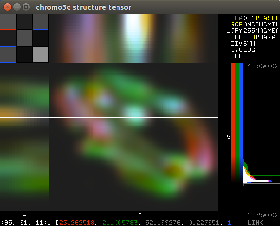

DIPviewer module
Interactive image display.
Contents
Introduction
DIPlib includes an OpenGL-based image viewer to help in the visualization of intermediate results. Its main purpose is as a debugging tool. It exists in its own library, which must be linked separately if used. The viewer contains two main classes
dip::viewer::ImageViewer, to visualize 2D 8-bit RGB imagesdip::viewer::SliceViewer, to visualize 2D slices of nD (tensor) images
More than one viewer can be active at the same time, and the separate windows are managed by a primitive window manager. Two libraries are supported for window management:
-
GLUT (
dip::viewer::GLUTManager): The venerable OpenGL Utility Toolkit, in the form of FreeGLUT. -
GLFW (
dip::viewer::GLFWManager): GLFW is more modern than GLUT, and better supported by MacOS. Its disadvantage is that it requires the user to poll an event handler from the main thread of the program, something that is baked into the MacOS Cocoa framework.
To use the dip::viewer::ImageViewer, the image must first be converted to 8-bit RGB,
for example using the dip::ImageDisplay class. It does not have a user
interface, and just shows the image.
User interface

dip::viewer::SliceViewer is more elaborate. Its user interface consists of four
main parts: The main visualization window, the control panel, the histogram,
and the status bar.
Main visualization window
The main visualization window on the left shows three projections, nominally XY, XZ and YZ. The upper left corner visualizes the different tensor elements.
Control panel
The control panel allows the user to select different ways of visualizing the image. It consists of four lists of options:
-
Color space, being
- SPA: image color space; this disregards the mapping.
- RGB: RGB color space, from any 3 tensor elements.
- GRY: Single grey value.
- SEQ: Single value mapped to a sequential blue-yellow colormap.
- DIV: Single value mapped to a divergent blue-red colormap. Use for symmetric mappings.
- CYC: Single value mapped to a cyclic colormap. Use for angles.
- LBL: Single value mapped to sequentially disparate colors. Use for labels.
-
Mapping, being
- 0-1: Unit values.
- ANG: Data between [-π, π].
- 255: 8-bit data.
- LIN: Linear interpolation between the global minimum and maximum values.
- SYM: Linear interpolation that is symmetric around 0.
- LOG: Logarithmic mapping.
-
Complex mapping, being
- REA: Real part.
- IMG: Imaginary part.
- MAG: Magnitude.
- PHA: Phase.
-
Projection, being
- SLC: Single slice around operating point.
- MIN: Minimum over dimensions perpendicular to slice.
- MEA: Mean over dimensions perpendicular to slice.
- MAX: Maximum over dimensions perpendicular to slice.
Histogram
The histogram shows both the frequency of intensities (100 bins between global minimum and maximum values), as well as the minimum and maximum values themselves. The colorbar left of the histogram shows how these values are mapped in the main visualization window. Changing the mapping in the control panel does not change the histogram extents, but does change the colorbar.
The histogram also indicates the value of the operating point and the current mapping range.
Status bar
The status bar gives the current pixel value, and shows option values after you change them.
Interaction
Interaction occurs mainly within the main visualization window, and depends on where it occurs:
Tensor elements
Within the tensor visualization subwindow, left-clicking selects the tensor element to visualize. If the RGB color space is chosen, left-clicking allocates the next available color (R, G or B) until three elements have been selected. Left-clicking on an already selected element deselects it.
Slices
Left-clicking in a slice changes the operating point for the visualized dimension(s). If slice projection is used, this will also affect the slices that are being visualized in the other projections.
Shift-left-dragging sets the projection ROI. The ROI edge closest to the cursor is selected to be moved. This is only available when minimum, mean, or maximum projection is used.
Middle-dragging gives some limited control over the relative sizes of the three projections.
Right-dragging moves the slice, which is convenient when zooming in.
Scroll wheel zooms in and out, centering in the current cursor position. Zooming in on the ancillary windows (nominal XZ and YZ) only zooms the Z dimension relatively.
Slice labels
Right-clicking on a slice label changes the visualized dimension for that projection. In the special case of selecting ‘-‘, a 1D slice is shown. Note that the horizontal dimensions of the nominal XY and XZ slices are necessarily the same, as are the vertical dimensions of the nominal XY and YZ slices.
Zooming near the slice labels only zooms that dimension.
Histogram
Left-dragging in the histogram changes the mapping range limits.
Status bar
To the right of the status bar is the Link indicator, which can be used to link to other windows. Simply click the indicator in the source window, and then in the destination window. Operating point, zoom and offset will then be shared between the windows. Right-click to unlink.
There are also a few keyboard shortcuts:
-
D and A: Step through the first image dimension.
-
S and W: Step through the second image dimension.
-
N and P: Step through the third image dimension.
-
F and B: Step through the fourth image dimension.
-
1 through 0: Select tensor element (first element is leftmost).
-
Ctrl + 1: Sets a 1:1 image pixel to screen pixel zoom for all dimensions.
-
Ctrl + F: Sets the image to fill the screen area, but maintaining the XY aspect ratio. The zoom of non-visualized dimensions is reset to 1.
-
Ctrl + L: Sets linear mapping between global minimum and maximum values.
-
Ctrl + N: Creates a linked clone of the current viewer. Convenient when wanting to display different tensor elements, mappings, etc.
-
Ctrl + R: Resets the projection ROI.
-
Ctrl + W: Closes the current window.
-
Ctrl + Shift + W: Closes all windows.
Usage example
The viewer is most easily used through the dip::viewer namespace. Simply
call
dip::viewer::Show( image );
after including dipviewer.h to show an image in the slice viewer. After all images have been shown this way, you can call
dip::viewer::Spin();
to enable mouse interaction. If you wish to continue your program, you must instead call
dip::viewer::Draw();
periodically. Make sure to call dip::viewer::Spin when you’re done to
ensure a clean exit.
See examples/cpp/viewer.cpp for a usage example of the full interface.